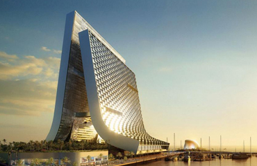

Main information
What we do

One world
Trade center
Increasing prosperity in our lives can be accomplished by having the right frame of
mind. The truth is, our thoughts are very powerful.
They are capable of influencing every aspect of our daily lives, from our physical health to our social
behaviors. I’m sure you’ve heard the adage, “As you think, so shall you be.”
If we want to improve our lives, we must first improve our thoughts. Harnessing the power of thought in a
positive way has the ability to create great change in our lives, including our financial well-being and
prosperity. But how? How do we take something as intangible as thoughts, and manifest them into a physical
reality?
We must first understand that being prosperous is more than having a lot of money. Prosperity is a mindset,
a way of interacting in our lives, and a way of thinking. Mastering this train of thought is not easy, but
it is simple enough if we keep working on it consistently.
Following are some ideas to help you improve your thoughts, and ultimately attract more prosperity into your
life:
Be grateful for the blessings in your life right now. Take a few minutes each day to express heartfelt
gratitude for the good things in your life. Even more powerful, write a few of these blessings down each
day. This helps to put your focus in the right direction — on abundance, not lack.
Use positive affirmations to begin training yourself to think positively. Use “I am” statements such as “I
am worthy of all that is good.” Write the statements down and repeat them nightly before bed. Over time,
this will implant these thoughts into your subconscious mind, and you will begin to naturally believe them.
Creative visualization can help you achieve prosperity by determining what it is you wish to achieve, and
then thoroughly creating that image in your mind. This works in the same way affirmations do. Our
subconscious will fill with images of prosperity, and eventually these subconscious “truths” will manifest
in the physical. “See” yourself as being prosperous, and you will become so.
Encourage yourself with the belief that you can achieve great things. This could also be one of your
affirmations, but expand on it. If you know you can earn a certain salary, tell yourself you can earn more.
Allow yourself to believe all things are possible, and you will gain the confidence needed to reach higher
than you ever imagined you could. If you believe you can do it, you are more likely to take the risks
associated with people who are highly successful. Prosperity and success go hand in hand, so take risks and
aim higher.
Start a savings account. As strange as it sounds, think about this: Like Attracts Like. Even if you can only
afford to put a few dollars into your account every month, it will begin to build up and attract more money.
Finally, believe you are already wealthy. The creative ability of our thoughts is such that we lend more
power and energy to whatever we consistently focus on. Focusing on lack will create more lack. Focusing on
wealth and prosperity will create . . . guess what?
Remember that this is a process. You likely won’t change your circumstances in one day. But over time, with
consistent focus, your thoughts will begin to attract what you want. Once you master this power of thought,
there are truly no limits to what you can create!

International
Commerce center
Successful businesses have many things in common, today we’ll look at the big ‘R’ of
recognition and how a digital advertising network may help.
Recognition can be illustrated by two individuals entering a crowded room at a party. Both walk to the far
side of the room, one of them slips through the crowd easily and unnoticed as they reach the far side. The
second person takes much longer to reach the far side because they are engaged in conversations along the
way as they continue to meet acquaintances and friends during their path. Which type of person would you
like to model your business after?
Your business is in a continual battle for your customers’ recognition whether you know it or not. If you
happen to be fortunate enough to be in a marketplace with very few competitors, that will not last for long.
You need your business to be at the forefront of your client’s minds so that when they require your products
or services, you are the go-to people.
Marketing your business is a necessity. Putting your name and logo out there and keeping it there is a must.
This lets clients know that you are “still around” and in business. Frequency is a good way to achieve the
“stand out factor” in recognition. I am reminded of both television and radio ads I had heard of in the
past. They run continually with a catch phrase or musical jingle over and over again on the radio or
television until you are absolutely sick of hearing it. You also cannot get it out of your head. Although
this type of advertising is expensive, it can be very effective, and the recognition factor is quite high.
Television and radio can reach a large audience, and they are broad in their appeal. In a brief sentence,
you are paying to market to both those that are your potential customers and a large segment of those who
are not now and probably never will be your customers.
There are more economical ways to pursue frequency, the point is to define your target market demographic,
and invest your marketing funds into the locations that will best be seen by them.
Another factor to consider is “can I market myself in a place where I will stand out from my competition, or
where my competition does not have a presence?” Why would you market yourself in a flyer or newspaper right
beside your competition and risk blending into a crowd, and ultimately being ignored? Another issue to look
at is diversification. As the saying goes, “don’t put all your eggs in one basket”. When you look at your
advertising budget for the year, try to find the affordable solutions that will continue to reap during the
full year of your advertising budget. An expensive radio or television promotion may give short term gains
for that weekend sale, but what about the rest of the year? Your clients may end up with the impression of
where did they go, I haven’t seen or heard anything about them for so long.
Don’t always look for the old standbys in marketing, but keep your eyes and ears open for the latest and
greatest ways to market your business. With the costs of technology coming down dramatically new options
such as digital advertising on LCD and Plasma screens are becoming more and more affordable, and the paper
billboards and posters becoming a thing of the past. With the flexibility, and curb appeal of full color and
motion video footage with computer generated graphics available to you, this is an option you don’t want to
pass by without a good look. Ultimately, recognition is required if you want to get people “in the door” of
your business (or on your website for the new e-businesses). This is going to cost you money, time and
effort up front any way that you look at it, but if you have successfully reached your target market, the
payoffs will be worth it.
Latest news
-

See The Unmatched Beauty.
Free directories: directories are perfect for customers that are searching for a particular topic. What’s great about them is that you only have to post once and they are good for long periods of time. It saves a lot of your time when you don’t have to resubmit your information every week or every month. The bad news is most of your traffic won’t come from here. I still feel it is worth it to get your link out there. Just take one day and set it aside for posting to free directories. You won’t need to do it again for at least 6 months. 2. Classified Ads: These are great for work from home businesses. Think about it. Where do people go when they are looking for a job? That’s right-the classifieds. The only downside to classified ads is that you have to resubmit them quite frequently. Once you find which classifieds bring you the most traffic you can concentrate on them and weed the others out. So it is really more time consuming in the beginning, and doesn’t have to be later on when you get the hang of things. 3. Free article submissions/ezines: The best way to inform others about your product or service is to write an article about it. In your authors resource box, you can tell readers about yourself and where they can go to check out your product or service. This is also an excellent way to get free links to your site if you have one. There are a lot of webmasters out there who are looking for good articles they can post on their site. If they post yours, that is another site that is doing the advertising for you. All for free. 4. URL Submissions: Probably the quickest and easiest thing to do to advertise your site. Just type “Free URL submission” in your search engine. When you get a list just enter the URL you are promoting and click submit. That’s it. It only takes a few seconds and your done. Just set a day aside once every 3 months and do this. 5. Forum Posts: Put your product or service website in your signature file when you sign up on some forums. It will be displayed every time you make a post. Try to look for topics that you have some knowledge on, and can give a relevant answer too. Do not spam anyone, you will get kicked off the forum and you will get a bad reputation. Get involved asking and answering questions that pertain to your area of business. Forums are great because once you make a post it stays there forever. It will get moved to the archives eventually, but someone could still find it if they were searching the archives. Yes, there are many people who do. 6. Traffic Exchanges: Probably the most time consuming way to advertise for free, but definately the most effective. Most forums I have visited have said in many posts that they received a lot of their profit from traffic exchanges. If you don’t want to spend the time surfing for credits, you do have the option of buying them. I would look into a program that lets you surf multiple websites at once like crazy browser. There are others and they are free to download. That way you can just spend one hour a day and get all your surfing in at once. 7. News-groups: Become involved in a group that has to do with your kind of business. You can usually mail the group once per day, but I would encourage you to find something fresh to talk about each day. People will tune you out if they see the same message all the time. Remember to never Spam anyone. Only join groups with the same interests as yours. In other words, don’t sign up for a recipe swapping group when you are advertising shaving cream.
-

Effective Advertising Pointers.
Having a home based business is a wonderful asset to your life. The problem still stands, when it comes time to advertise your business for a cheap cost. I know you have looked for this answer everywhere; I am here to share a few simple yet creative ways, to advertise your new home business. A few suggestions would be, newspapers is the one source that many people go to, when they have just opened there business. You would need to research online, for newspapers that are in your area. Newspapers are a very simple yet effective tool to use to take your business from basic home based business to business galore. Having catchy phrases and pictures or photographs of your products should help spice it up. Knowing your audience is the key to businesses. There are also, radio stations you could call in, or even email too. If you are a communicator, you can try to get onto a radio station and just share your business. You would need to write an outline or some type of catchy jingle that will help you be different from the rest of the business. The creativity comes from within. Knowing your target and knowing what you provide is gold, will surely, make you stand out from the rest of the crowd. Did you know that creativity comes from the heart and soul in once you find the creative voice you will find all kinds of ways to advertise your home business without spending a fortune for a market rep when you can do it yourself saving yourself time and money where you can be spending it on something else. You may also want to try in write a catchy jingle that will catch your readers and target audience. Being creative with your jingle will sure bring you visitors to your business rather it’s a restaurant or corporate business many people have jingles like McDonalds, Wendy’s, Subway, and Pizza Hut these people came up with there own jingles to sale there products to there target audience. Another thing you can do is sit down and write out an outline of the things you’re trying to sale than right and catchy but simple jingle that will stop your audience dead in there tracks. Many people hire writers for there jingles in some right there jingles themselves which will also save you more money that way also without going over your budget. You can say something like Dixie Professional Writing Service always on your side. You can say something like that but with more expression to it but just remember to be creative enough to advertise your business.
-
Four Tips from John Gordon.
John Gordon, an American business consultant and author of the bestselling books The Energy Bus, Soup, The No Complaining Rule and Training Camp, writes and talks a lot about career and personal development. Well-known companies and organizations like Wells Fargo, Campbell Soup, Bayer and West Point Academy listen to his opinion. In one of his blogs, Gordon writes that today's workforce lacks motivational leaders. Although this is the immediate task of the management of any company. Here are 4 tips from Gordon on how to motivate the team. 1. Take time to communicate with the team In crisis situations, tension and negative moods in the team build up. Employees do not know what will happen to their work, they fear layoffs and are at a loss in what to do next. If you do not communicate with employees and do not explain their actions to them in such situations, their pessimism can lead to the development of a negative scenario. So you risk losing not only part of your business, but also your team. And the latter is sometimes more difficult to restore than to find new or return old customers. So make sure to take the time to communicate with your team. This will allow employees to understand what you expect from them, where the company is going, and what their role is in this process. 2. Set a positive example Leadership involves the formation and transmission of a certain system of values. Whatever it is, its task is to stimulate employees to overcome routine and global challenges that the company faces, to stimulate them to work for results. This is rational optimism, without which the productivity of human activity is impossible. Its goal is not to force people to close their eyes to challenges, but rather to motivate them not to be afraid to deal with them. If a leader demonstrates this approach to problem solving by example, it is easier for him to convey these values to the entire team. 3. You must have a vision Motivation is not only stories of achievements, but also setting new ambitious goals. An effective leader is able to show where the company is heading and what the prospects are. Discuss development strategy with employees. State what you are doing to implement it now, what needs to be done in the future, and how your employees should contribute to this. Listen to their vision for the future of the company. Develop a strategy with your team, and then achieving it will be the long-term motivation that every team in business needs. Show employees that the quality of their work today is the success of the company and their personal success tomorrow. Demonstrate that it is up to each team member to achieve the goals of the organizational development strategy. 4. Get to know your employees better Informal communication plays an important role within the company. If you do not know your employees and their interests well, it will be difficult for you to determine the appropriate methods of motivation. The task of a leader is to find common ground that can unite the team. One group of people will be united by the creation of a football team, another by monthly intellectual tournaments or computer games competitions ... Take time so that you and your employees get to know each other better in an informal setting. Motivation is the most important component for any team. Motivated employees work productively, together and are focused on achieving results. We hope these simple tips will keep your employees motivated at a high level.
-

Effective motivation methods.
1. Awareness The best motivation to start a business is the realization of what exactly we need it for, what needs we will use it to satisfy. After all, we exist because sometimes we need something, we want something, and these desires move us forward. Thanks to them, we are active and proactive. So it is with business, answer for yourself the question: “What will I get as a result of opening my own? Why do I need this? " If options come to mind, for example, money - then dig deeper, what exactly do you want to get from a large amount of money? Maybe it's independence, freedom? A desire to receive recognition from a loved one or in general? Maybe you want to enter the international market in order to achieve global success? This is a very important step, otherwise interest may disappear in the middle of the journey or at the slightest failure. It is difficult to move forward with all your efforts and not understand where you are going. 2. Success magazine key to the book Every day, you just need to feel the taste of victory, even a very small one in the form of a minor achievement. To do this, you should plan your every day so that the tasks to be completed, the deadlines and the necessary resources that will be spent are always planned. And each fulfillment of the intended task will give a feeling of a little joy, because everything is going according to plan, and accordingly under control. This point is especially important for the development of a business in the initial stages, thereby motivating to continue and claim more. You can even have a so-called "success journal", where you can write down your slightest victories and completed tasks. 3.Liability We have already talked more than once about the role of responsibility in the life of every person, but I will repeat myself here. The more we want to get, the more we will have to do or take risks. And accordingly, then bear responsibility for the consequences and results. Therefore, it is important to understand that your own business gives you more freedom, but at the same time imposes more obligations. You must admit that the life of a person who works, for example, in a bank is very different from the life of a person who runs a network business. Yes, he has fewer opportunities in life, but even after work he can relax, forget about it, having completed his volume of work in a day. While the leader must always be in good shape. Therefore, listen to yourself, ambition is very good, but the guarantee of success is the ability to act and understand the level of your responsibility, are you ready to bear it? 4. Comfort zone Take a look around, where are you? Are you comfortable living like this? A person is able to achieve tremendous success when he risks leaving his own comfort zone. That is, when we get used to something and don't change for a long time. It seems to be a comfortable life, but it is very ordinary and without development, without gaining new experience, growth ... For many years, one and the same salary, sometimes a person can feel completely immobilized, and at the same time be afraid to risk changing something, suddenly it will become even worse than it is now. Therefore, if you are thinking of starting your own business, write a list in which you include all the changes that will happen to you. What will change? What scares you? What are the risks? Come up with options for each controversial moment with which it is possible to solve the situation. This will give you more confidence in your abilities, and, therefore, create a basic foundation at the beginning of entrepreneurship. By the way, on this blog you can find many quotes about the comfort zone here. 5. Enjoyment of the process people happily work in a team In order for there to be a desire to move in a given direction, to go towards your dream, you also need to enjoy the process, then there will be no questions about motivation. After all, if you have a goal, for example, to achieve financial independence in order to buy a big house, but the tool for realizing this goal was not chosen correctly - do not hold out for a long time, because energy arises when we do what we like. But when you have to do an unloved and not interesting thing, most of your energy is spent on overcoming your own resistance in order to force yourself to do something. Therefore, to create your own business, it is important to choose the niche that is interesting. If you are interested in financial independence, then you can read the basics of achieving it in the article: "Can anyone become financially independent and what is required for this." 6. MLM If you are not ready to take big risks, and for a start you want to gain knowledge and experience in the field of business, an excellent option is multilevel marketing, if abbreviated as mlm, that is, a network where anyone can become an independent distributor, spreading information about a product. This can be done without even having the initia
-

Hypnotize Yourself Into The Ghost.
There are many things that are important to catalog design. Your images must be sharp and appealing. Your text and even the font you use for the text is important. The cover page design and the design of your catalog’s product pages all play important roles in designing a catalog that will bring in new customers and sales. However none of the things mentioned above are more important than the type of paper you will choose to print your catalog on. The “feel” of your catalog is important to your potential customers. The longer they have your catalog in their hands, the more product they will buy. In this article I will go over some of the many paper choices you have to print your catalog on. First you need to decide if the cover will be the same paper as the rest of your catalog. In most cases the cover will be of heavier weight then the interior pages. Second you will need to choose coated or uncoated paper for printing your catalog. Coated paper is for the glossier layouts and uncoated is more economical, but can still display your products well. So you have two things to consider first, “Will it be glossy paper or not?”, “Will my cover be the same weight as the interior pages of my catalog?” Once you have answered those two questions the next decision is what the weight of the paper will be. Most catalogs go with 60, 70, or 80 lb. weights. So it would be 60lb uncoated or coated, 70 lb. Coated or uncoated. 80 lb. Paper usually is only chosen for 80 lb. Weight and above. Also, not all paper is measured by weight. Some is measured by thickness or “points”. Now the above is really over-simplified. There are other types of special paper you can choose from. There is textured paper, photographic paper, and other more expensive paper to choose from if you are selling a high-end or expensive product. There are also other considerations when choosing the paper your catalog will be printed on. Such as the method of printing you are going to choose. If you are going to have your catalog printed on a hot-set web press, then you can choose uncoated or coated paper. The heat will dry the ink as it prints your catalog. If your printer uses a cold-set web press then the ink air-dries and is absorbed into the paper. A cold-set web press cannot print on coated paper. If your printer uses a sheet-fed press then you can choose from any of the high quality papers they have available. The same goes for printers that do digital printing. It will depend a lot on the printer you choose. You need to find out what type of paper is available and you will want to see samples of the paper to get a better idea of which one you want to print your catalog on. Also ask your printer to suggest the different types of paper they think will be the best for your catalog. Here is a list of some of the types of paper your printer may have available for you to choose from or may be able to order for you. Dull Coated Paper Matte Coated Paper Glossy Coated Paper Antique Paper Vellum Paper Wove Paper Smooth Paper Felt Paper Linen Paper Fiber-added Paper Laid Paper Parchment Four things determine the quality of the paper, opacity, brightness, finish, and ppi. (Pounds per inch) Brightness affects the contrast and brilliance of the paper. It affects how your text will stand out on the pages of your catalog. Opacity is how much your ink is visible from the back of the page. If a paper is too opaque, your text and images from one page will be seen through onto another page that your customer is trying to read. The finish affects the feel of the pages and also how your images will look. The lower grade finishes produce grainier images while high quality finishes sharpen the look of your images. Ask your printer to provide you with samples or swatch booklets and a price list for printing your catalog on the various types of paper before you decide. You know what your budget is and paper is only one of the expenses you have to consider.
Map
Get in touch
- 91 Nolan Extensions Suite 670
- +001 356-868-2454
- gahuy93@gmail.com
Isaac Dunn